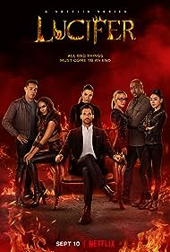

Lucifer
A political Godfather dies and a lot of thieves dressed up as politicians took over the rule. Question arises regarding the successor of the God, unfolding few names, along with the God's most beloved angel, Lucifer.
suit
Throughout its run, Suits was nominated for numerous awards, including individual attention for Torres and Adams. Besides two nominations recognizing her role as a supporting actress, Torres was awarded Outstanding Performance in a Television Series at the 2013 NHMC Impact Awards. Adams was nominated for Outstanding Performance by a Male Actor in a Drama Series at the 2012 Screen Actors Guild Awards. The show itself was nominated for two People's Choice Awards. Its success spawned a short-lived spin-off, Pearson, centered on Jessica Pearson's entry into Chicago politics, which premiered alongside the final season of Suits on July 17, 2019.[7][8][9] Suits concluded on September 25, 2019, after nine seasons and 134 episodes.
man

2008's Iron Man tells the story of Tony Stark, a billionaire industrialist and genius inventor who is kidnapped and forced to build a devastating weapon. Instead, using his intelligence and ingenuity, Tony builds a high-tech suit of armor and escapes captivity.